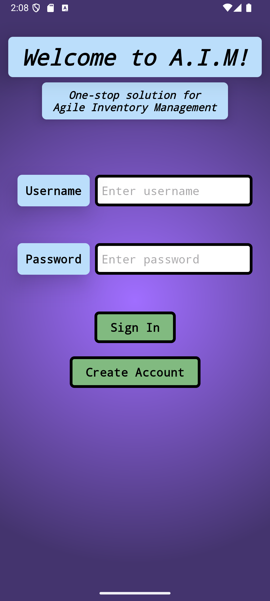
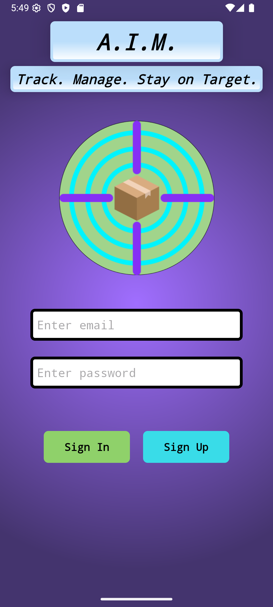
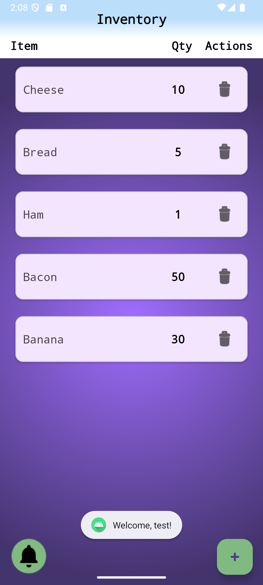
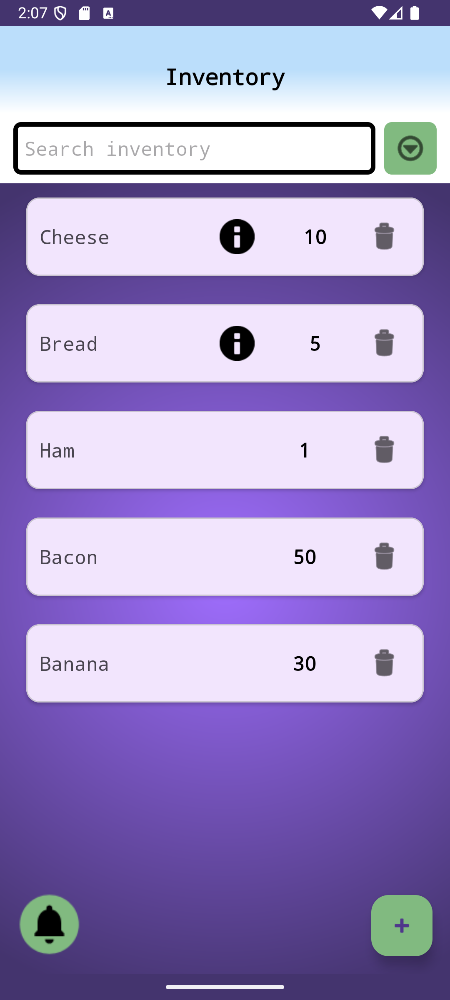
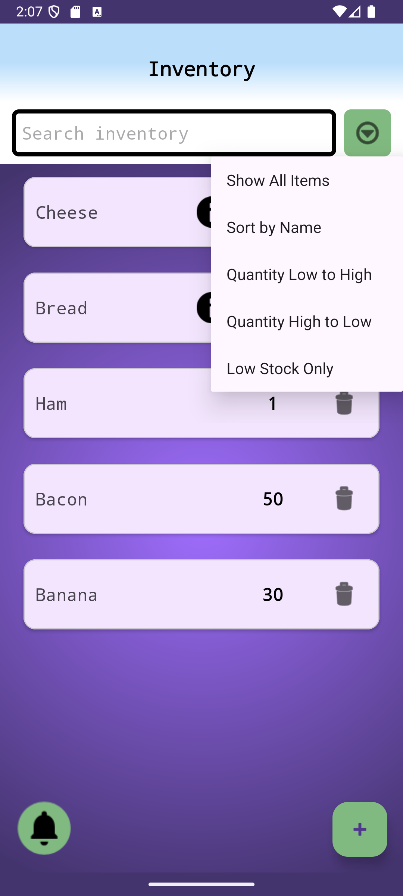
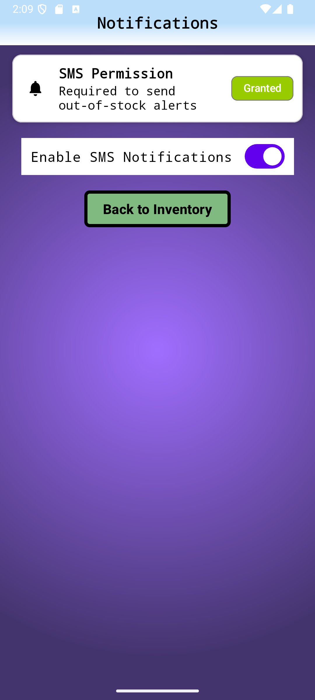
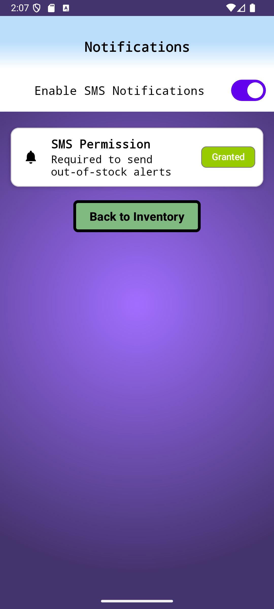

UI Enhancement Comparison
The user interface enhancements were completed across the software engineering, algorithms, and database enhancement phases. These changes improved usability, reduced visual clutter, added support for new functionality, and created a more consistent experience across the application.
Welcome Screen


The welcome screen was updated during the software engineering and database enhancements. The revised version removes redundant labels, uses email-based authentication, adds clearer branding, and creates a cleaner sign-in and sign-up layout.
Inventory Screen


The inventory screen was improved during the algorithms and data structures enhancement. The updated design added a search bar, sorting and filtering options, description indicators, cleaner item cards, and a more consistent layout for managing inventory data.
Search, Sort, and Filter Menu

This menu supports the Category Two enhancement by giving users direct access to sorting, filtering, and low-stock prioritization features.
Notification Screen


The notification screen was refined to improve layout consistency and make the SMS permission state easier to understand. The enhanced version separates the permission status, toggle control, and navigation button more clearly.